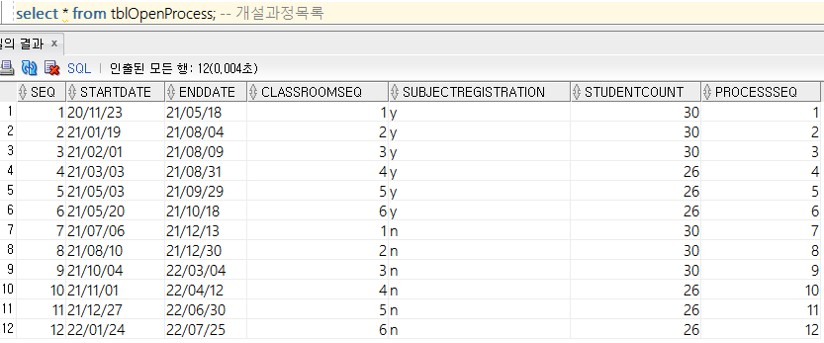

Sujeong's Portfolio
Sujeong's Portfolio
Sujeong's Portfolio
Sujeong's Portfolio

2021. 05. 24 ~ 2021. 06. 08 (5일간) / 4명
Windows 10, Oracle Database 11g, SQLdeveloper, eXERD

요구사항을 분석한 후 필요한 테이블을 선정하고 관리자/ 교사/ 교사_강의가능과목/ 개설과정/ 과정 테이블의 속성과 관계를 고려하여 ERD를 작성했다.
NEXTERD를 기반으로 각 테이블의 CREATE, DROP문을 생성하고 ALTER로 기본키와 외래키, 제약사항을 작성.
시스템 사용 기간을 1년으로 가정하고 INSERT
INTO를 사용하여 더미데이터를 생성.
SELECT로 데이터를 확인하며 구현하였다.
출결점수를 입력,수정,삭제하는 프로시저를 생성하고, 외래키로 연결되어 있는 여러개의 테이블을 JOIN하여 필요한 조건을 적용시키고 JOIN과정에서 늘어난 속성에서 필요한
속성만 출력할 수 있도록 VIEW를 생성하였다.
DELETE
FROM으로 튜플을 삭제하고 UPDATE로 일부 속성값만 수정할 수 있도록 프로시저를 구현하였고 EXECUTE로 프로시저 실행을 확인하였다.
시험테이블의 속성 중
시험파일등록여부인 'a','b'로 작성되어 있는 속성을 값에 따라 '등록(필기)', '등록(실기)', '미등록'으로 변환하여 출력되도록 함수를 작성하였다.